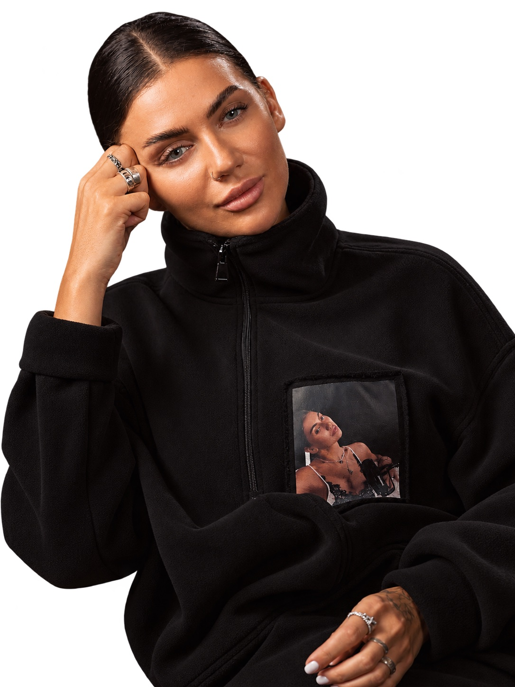
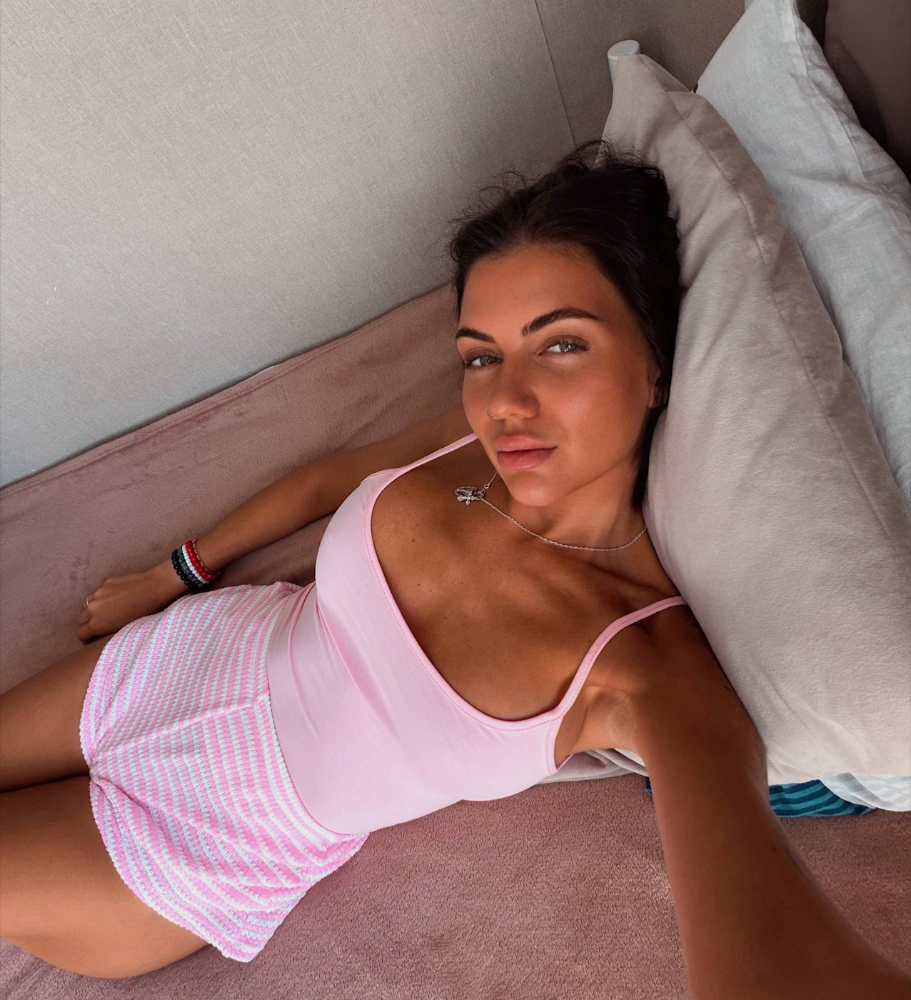
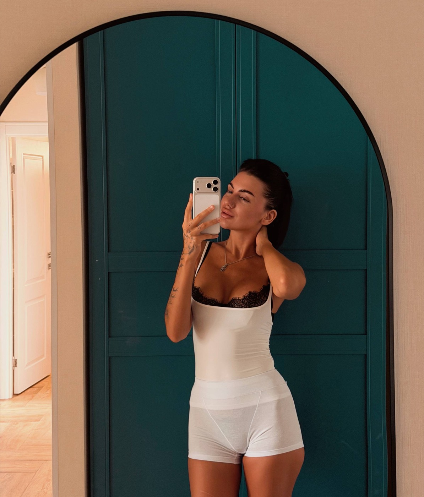
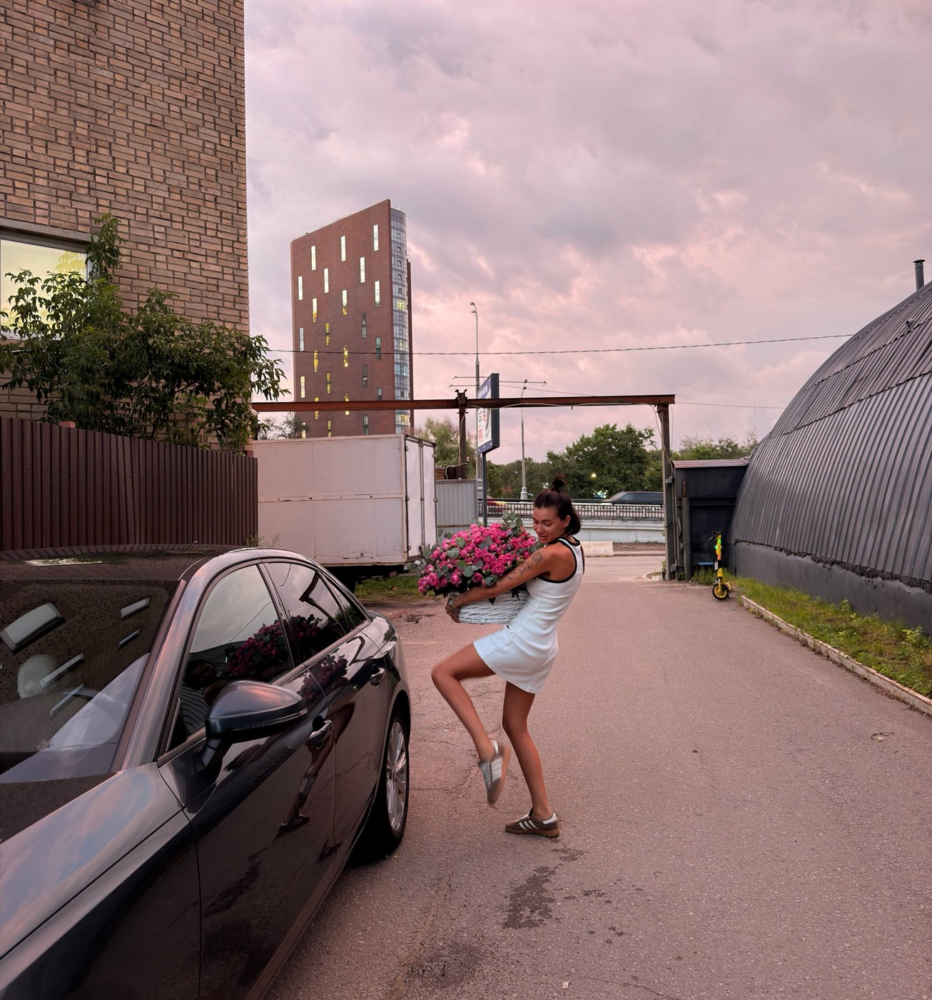

3дня
Трёхдневный эфир
15, 16 и 17 ноября я проведу три эфира лично. Вы увидите, где перестали чувствовать жизнь, чего хотите на самом деле и как желание становится делом и деньгами.
Анкета предзаписи
Я не учу, как правильно жить и не буду спасать вас.Я возвращаю контакт с собой, чтобы вы сами выбрали свою жизнь и выдержали этот выбор.
Займите место в предзаписи и получите доступ к 3-х дневным эфирам, где я расскажу, где именно вы соглашаетесь на меньшее и называете это любовью.

Тема этого потока
Сюда можно прийти впервые, и прошлый сезон для этого не нужен.
Это не курс про секс и не обещание, что теперь будет легко. Это способность снова чувствовать, хотеть и доводить желание до дела и денег.
15, 16 и 17 ноября я проведу три эфира лично. Вы увидите, где перестали чувствовать жизнь, чего хотите на самом деле и как желание становится делом и деньгами.
Это видео о том, как перестать искать у других разрешение на свою жизнь. Вы узнаете себя в пяти ситуациях: отношения, деньги, работа, право говорить о себе и важное решение. Вместо «как правильно» там звучит вопрос «а как моё?».
Её получают те, кто занял место в предзаписи. Это автобиография с элементами моего метода. Скорее всего, она будет называться «Жить жизнь». Три цикла: лабиринт, согласие, счастье.
Дополнительная групповая встреча со мной, сверх трёх дней.
До 10 000 рублей. Такой цены не будет у тех, кто придёт без анкеты.
Можно выкупить одно из 30 мест в группе, где я участвую лично.
15 ноября
Итог дняВы увидите, что желания нет не потому, что жизни нет, а потому что вы давно перестали слышать то, что мешало быть удобной.

16 ноября
Итог дняВы услышите, чего хотите именно вы, и не примете это за приказ немедленно всё бросить.

17 ноября
Итог дняВы выйдете не с новым знанием о себе, а с одним шагом, который уже можно сделать.

Три дня показывают, где вы перестали себя слышать. Десять недель «Союза с собой» нужны, чтобы замечать это в обычный день, выбирать своё и не покидать себя после выбора.
Что с этим делать дальше
Либидо жизни здесь не про секс. Это когда вы снова чувствуете, чего хотите, выдерживаете это желание и доводите его до выбора, дела и денег. Желание здесь не приказ всё бросить. Его можно услышать и решить, что с ним делать.
Удовольствие. Это не жизнь без отказов. Можно выбрать трудное, если оно ваше, и остановиться до того, как вы себя измотаете.
Деньги. Они не доказывают, что вы достаточно хорошая. Это обмен за то, что вы создали, а не оценка вашей личности.
Следующий поток
Сезоны «Союза с собой» не повторяют друг друга.
Это для вас, если вы всё делаете и почти ничего не чувствуете, хотите и не делаете, а любимое дело так и не получает формы.
Я не читаю лекции. На этих неделях вы замечаете, где тело говорит «тесно», отличаете своё желание от долга и доводите его до дела, цены и обычного дня.

Дело не в том, что жизни мало
Можно годами всё успевать и всё понимать, а внутри жить как на автомате. Энергия уходит не от нехватки мотивации, а от того, что день построен без согласия с собой.
Удовольствие здесь не жизнь без отказов. Это когда можно выбрать трудное, если оно ваше, и получить своё, не отрабатывая это виной.
Вас не должен никто выбирать, кроме вас самих.
Я не учу, как правильно жить, а показываю, где вы ждёте, что вас выберут, вместо того чтобы выбрать себя. Один раз выберете себя, и дальше я вас не остановлю. Если внутри звучит «хочу по-другому», заполните анкету и займите место. Я жду.
Заполните анкету, и ссылку на закрытый эфир я пришлю только вам, в канал для тех, кто её заполнил.